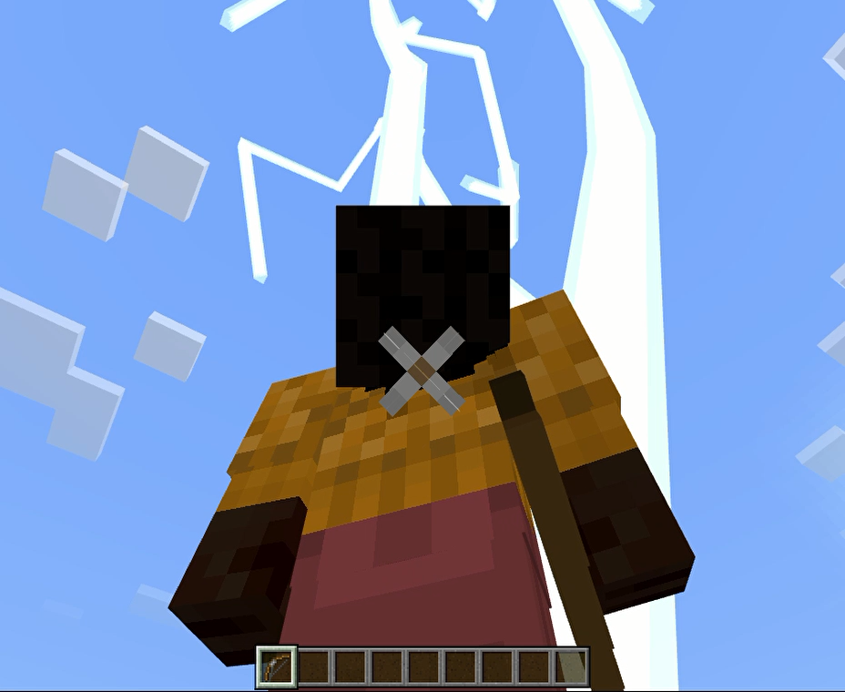
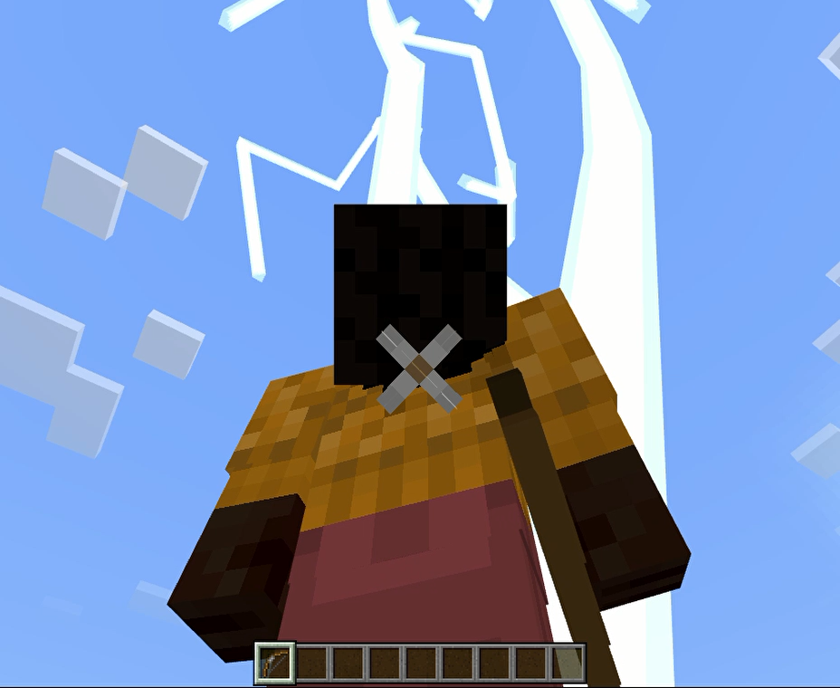

【いなずまの弓】
はじめに
以下のように矢を放った方向へ稲妻を落とせます。
（再生マークが付いている画像をクリックすると再生／停止が行えます）

空を見上げるアングルではこんなイメージ

矢を放ったタイミングで稲妻を落とすので、近距離／遠距離の同時攻撃が可能なチート装備です。
自分がダメージを受けないギリギリのところへ落とすようにしているのでサバイバルモードでも安心です。
地上だけではなく以下の場所でも使える事を確認しています。
操作に慣れてくれば矢で牽制しながら稲妻を落とせるので帯電クリーパーやピグリンも量産し放題でしょう。
（再生マークが付いている画像をクリックすると再生／停止が行えます）
空を見上げるアングルではこんなイメージ

矢を放ったタイミングで稲妻を落とすので、近距離／遠距離の同時攻撃が可能なチート装備です。
自分がダメージを受けないギリギリのところへ落とすようにしているのでサバイバルモードでも安心です。
地上だけではなく以下の場所でも使える事を確認しています。
- 水中
- 洞窟
- ネザー
- エンド
操作に慣れてくれば矢で牽制しながら稲妻を落とせるので帯電クリーパーやピグリンも量産し放題でしょう。
「いなずまの弓」の取得
本環境のビヘイビアパック／リソースパックなどのアドオンパックを適用しておけば、以下の方法でユニークアイテムとして「いなずまの弓」が手に入ります。
▶ネットショップ

ショップで購入する場合
以下のショップで購入できます。▶ネットショップ
コマンドで取得する場合
以下はワールドオーナーやシステム組み込み用としてコマンドで取得する方法です。サーバー側の実装
今回のアイテムの実装では"ItemUsed"というサブスクライブイベントを使用しています。
マインクラフト上でアイテムを使ったと認識されると発生するイベントのようで、フレームワークを使って以下の内容を実装しています。
※サブスクライブイベントの処理内容については>> こちらでご紹介しています。
「いなずまの弓」を使った時に発生するイベントデータの形式
イベントを処理するための任意のコマンド名を以下のファイルへ定義します。
app/CommandUnits/CommandQueueEnumForMinecraft.php
コマンド名を以下の場所へ追加して利用可能にします。
app/CommandUnits/CommandForMinecraft.php
コマンド名と処理（関数）の関係を以下のメソッドへ追加して紐づけを行います。
app/CommandUnits/CommandForMinecraft.php
これをいれておく事で、弓を使ったイベントを検知してマインクラフトがWebsocketサーバーへイベントデータを送信してくれます。
setting/minecraft.php
受信したイベントデータをコマンド名へ変換する処理を以下のコマンドディスパッチャーへ追加します。
※ここでは
app/InitClass/InitForMinecraft.php
コマンド名に紐づけた処理（関数）を以下のファイルへ実装します。
※処理の冒頭で
※「いなずまの弓」の
※ここでは受信した座標データと三角関数を使って稲妻を落とす座標を計算した後マインクラフトへ
app/CommandUnits/CommandForMinecraft.php
マインクラフト上でアイテムを使ったと認識されると発生するイベントのようで、フレームワークを使って以下の内容を実装しています。
※サブスクライブイベントの処理内容については>> こちらでご紹介しています。
「いなずまの弓」を使った時に発生するイベントデータの形式
{
"body":
{
"count":<数字>,
"item":
{
"aux":401,
"id":"bow",
"namespace":<文字列>
},
"player":
{
"color":<16進数？>,
"dimension":<数字>,
"id":<数字>,
"name":<文字列>,
"position":
{
"x":<数字>,
"y":<数字>,
"z":<数字>
},
"type":<文字列>,
"variant":<数字>,
"yRot":<数字>
},
"useMethod":<数字>
},
"header":
{
"eventName":"ItemUsed",
"messagePurpose":<文字列>,
"version":<数字>
}
}
キューとステータスUNITの登録
イベントを処理するための任意のコマンド名を以下のファイルへ定義します。
app/CommandUnits/CommandQueueEnumForMinecraft.php
case ITEM_USED = 'item_used';
コマンド名を以下の場所へ追加して利用可能にします。
app/CommandUnits/CommandForMinecraft.php
protected const QUEUE_LIST = [
CommandQueueEnumForMinecraft::ITEM_USED->value
];
コマンド名と処理（関数）の関係を以下のメソッドへ追加して紐づけを行います。
app/CommandUnits/CommandForMinecraft.php
public function getUnitList(string $p_que): array
{
$ret = [];
・
・
・
if($p_que === CommandQueueEnumForMinecraft::ITEM_USED->value)
{
$ret[] = [
'status' => CommandStatusEnumForMinecraft::START->value,
'unit' => $this->getItemUsedStart()
];
}
return $ret;
}
新規実装箇所
サブスクライブイベントは以下の設定ファイルへ登録します（複数登録可）。これをいれておく事で、弓を使ったイベントを検知してマインクラフトがWebsocketサーバーへイベントデータを送信してくれます。
setting/minecraft.php
return [
'subscribe_types' =>
[
'ItemUsed'
]
];
受信したイベントデータをコマンド名へ変換する処理を以下のコマンドディスパッチャーへ追加します。
※ここでは
bowというアイテム名を検知しています。app/InitClass/InitForMinecraft.php
public function getCommandDispatcher()
{
return function(ParameterForMinecraft $p_param, $p_dat): ?string
{
$minecraft = $p_param->isMinecraft();
if($minecraft === true)
{
・
・
・
if(isset($p_dat['data']['header']['eventName']) && $p_dat['data']['header']['eventName'] === 'ItemUsed')
{
if($p_dat['data']['body']['item']['id'] === 'bow')
{
return CommandQueueEnumForMinecraft::ITEM_USED->value;
}
}
・
・
・
}
}
}
コマンド名に紐づけた処理（関数）を以下のファイルへ実装します。
※処理の冒頭で
auxの数字を判定していますが、このauxがないと全ての弓アイテム使用時に発動してしまいます。※「いなずまの弓」の
auxデータ値（401）はビヘイビアパックで定義しています。※ここでは受信した座標データと三角関数を使って稲妻を落とす座標を計算した後マインクラフトへ
summonコマンドを送信しています。app/CommandUnits/CommandForMinecraft.php
protected function getItemUsedStart()
{
return function(ParameterForMinecraft $p_param): ?string
{
$p_param->logWriter('debug', ['MINECRAFT ITEM_USED:START' => 'START']);
if($rcv['data']['body']['item']['aux'] !== 401)
{
return null;
}
// 受信データの取得
$rcv = $p_param->getRecvData();
$x = (float)$rcv['data']['body']['player']['position']['x'];
$y = (float)$rcv['data']['body']['player']['position']['y'];
$x = (float)$rcv['data']['body']['player']['position']['z'];
$y_rot = (float)$rcv['data']['body']['player']['yRot'];
$y_rot_abs = abs($y_rot);
// Z座標の計算
$z = cos(deg2rad($y_rot_abs)) * 5;
// X座標の計算
$x = sin(deg2rad($y_rot_abs)) * 5;
if($y_rot > 0)
{
$x = -$x;
}
// コマンド送信
$cmd_data = $p_param->getCommandDataForSummonThunder($x, 0, $z, $rcv['data']['body']['item']['id']);
$data =
[
'data' => $cmd_data
];
$p_param->setSendStack($data);
return null;
};
}